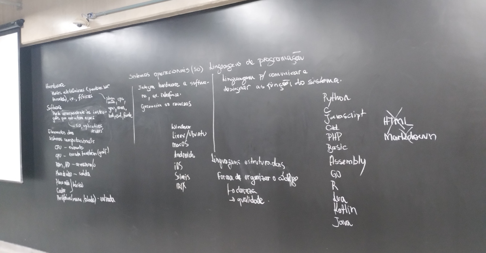
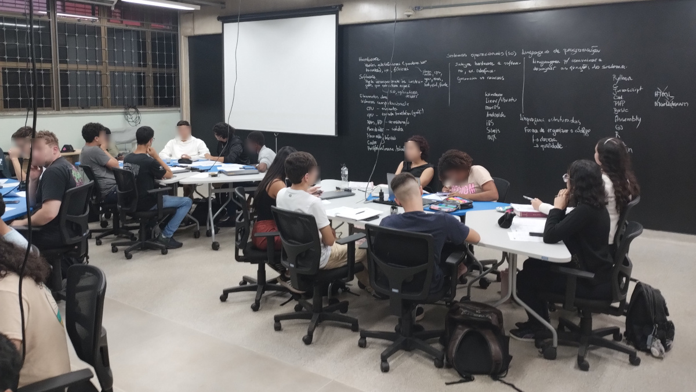

CAP: Snowball em noções de computação
A metodologia snowball foi aplicada para o ensino das noções de computação na primeira aula de CAP (31/3/2025).
Contexto
O conteúdo envolveu, de forma introdutória, os conceitos:
- Organização básica de computadores
- Hardware e software
- Sistemas operacionais
- Linguagens de programação
- Aplicativos
Os objetivos educacionais envolvem apenas a memorização e o entendimento dos conceitos básicos (níveis básicos da Taxonomia de Bloom).
Descrição
A dinâmica foi planejada para uma aula de 100 minutos e foi dimensionada em três etapas. Devido à necessidade de formação de grupos, o Espaço Maker foi utilizado.
Etapas da snowball
Por questão de tempo, foram três etapas com cerca de 20 minutos cada uma.
| Etapa | Descrição |
|---|---|
| 1 | Elaboração dos conceitos propostos de forma individual e sem consulta. |
| 2 | Revisão dos conceitos em duplas (houve um trio), podendo haver consulta online para complementar as informações |
| 3 | Redação final da redação dos conceitos em grupos maiores (seis componentes em média) |
Em cada uma das etapas havia os seguintes momentos:
- O professor orientava sobre as ações da etapa;
- Os alunos se apresentavam uns aos outros (turma de calouros que pouco se conhecem);
- Realizavam a redação sobre os conceitos conforme as particularidades da etapa;
- Alguns alunos sorteados faziam a leitura de parte do material produzido por ele ou pelo grupo;
- O professor complementava e, eventualmente, corrigia algum conceito.
A partir da segunda etapa, o professor passou a organizar as ideias e conceitos na lousa, de forma que havia um resumo completo no final.
Encerramento da atividade em aula
No final, o professor usou o material gerado coletivamente na lousa para repassar os principais conceitos.

Considerações sobre os resultados
Como se tratava do primeiro dia de aula (duas aulas; quatro horas), a apresentação da disciplina foi feita na primeira parte e esta atividade na segunda, o que tornou menos cansativo ou entediante o início da disciplina.
Com a etapa 1 começando com as experiências individuais, foi possível balancear a diferença de conhecimento entre os alunos, evitando exposições desnecessárias. No segundo momento, os alunos discutiram em duplas, complementando suas experiências pessoais e também obtendo mais informações online (que é uma competência importante). Na etapa 3 optou-se por reunir cada três duplas em uma nova equipe, o que levou a grupos maiores, mas também a um menor número total de grupos.
Na avaliação visual do professor, os grupos maiores não causaram constrangimento de partipação individuais, pois todos já haviam se acostumado a se manifestar. Com um número menor de grupos, objetivou-se que todos pudessem contribuir para a redação final na lousa, não ficando ninguém de fora.
Na avaliação da atividade, a visão geral foi positiva e os alunos acharam que houve uma boa construção do conhecimento. Poucas dificuldades foram relatadas, sendo elas pontuais.
